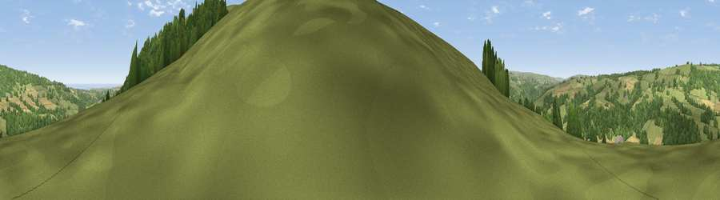

Viewpoint near Grosmont
#11387 in England · top 27% of its area beats it · near GrosmontWhere it is
The exact computed spot (NZ 84175 05475). Click the marker for map links.
The view, rendered

A 360° render of this exact spot computed from the terrain model, tree cover and land cover — summer colours, afternoon light, calibrated against photographs of famous viewpoints. Real trees, hedges and buildings will differ in detail.
The panorama
Grey silhouette: terrain skyline in each direction (720 bearings, Earth curvature and refraction included). Dashed green: skyline with trees (+15 m) and buildings (+8 m) as obstacles. Blue strip: how far the ground is visible on each bearing.
Where the view opens
Wedge length = distance to the farthest visible ground on that bearing (vegetation-aware). Rings at 10, 25 and 50 km.
What fills the view
64% grassland · 30% woodland · 6% cropland
Angular shares of the visible panorama (visual magnitude), not map area. Landscape diversity 0.37 (0–1 Shannon).
Key numbers
More beautiful places nearby
The staircase of upgrades: each row has a higher view potential than everything closer. Driving times are estimates from straight-line distance, calibrated against real road routing — check an actual route before setting out.
| Place | Direction | Drive | Score |
|---|---|---|---|
| Viewpoint near Eskdaleside | E · 1 km | ~3 min | 80.7 |
| Viewpoint near Fylingthorpe | E · 9 km | ~18 min | 81.1 |
| Viewpoint near Fylingthorpe | E · 9 km | ~19 min | 82.3 |
| Viewpoint near Robin Hood's Bay | E · 10 km | ~20 min | 83.3 |
| Viewpoint near Ravenscar | ESE · 12 km | ~23 min | 90.0 |
| Viewpoint near Easington | NNW · 18 km | ~30 min | 90.2 |
| The Knoll | SSW · 437 km | ~411 min | 91.0 |
54.43773, -0.70371 · source: screening · position refined by local search. Computed location — check access rights before visiting.